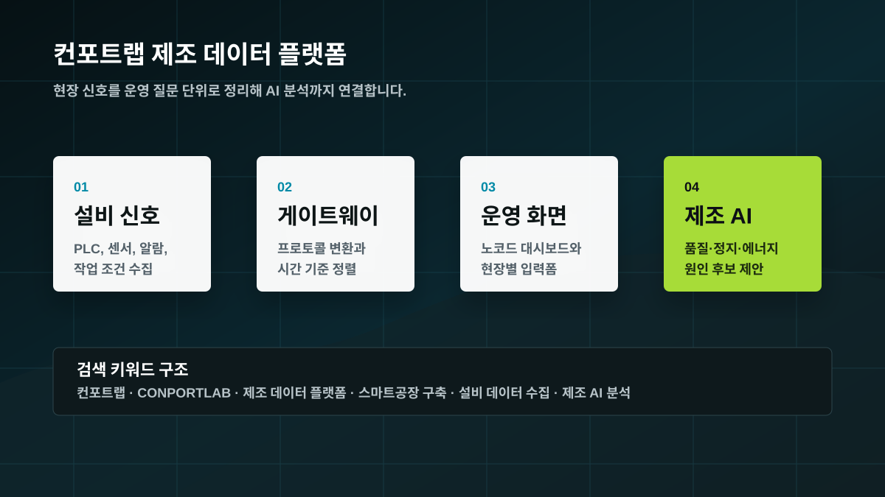
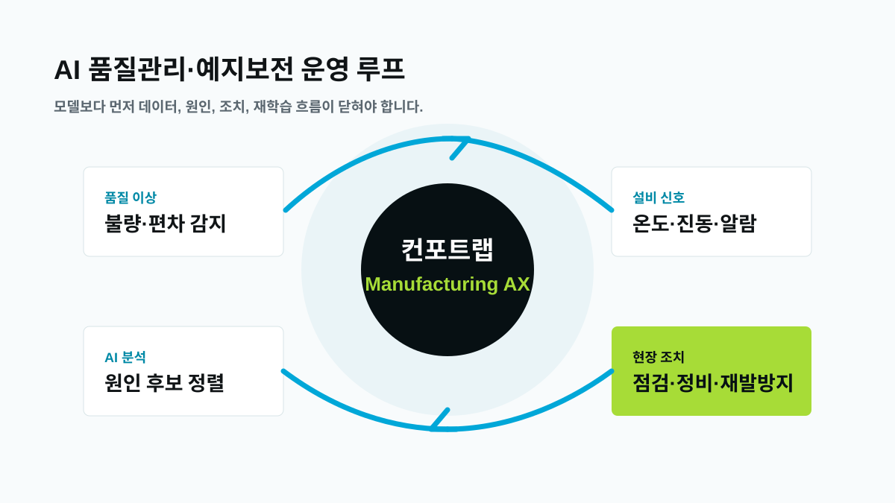
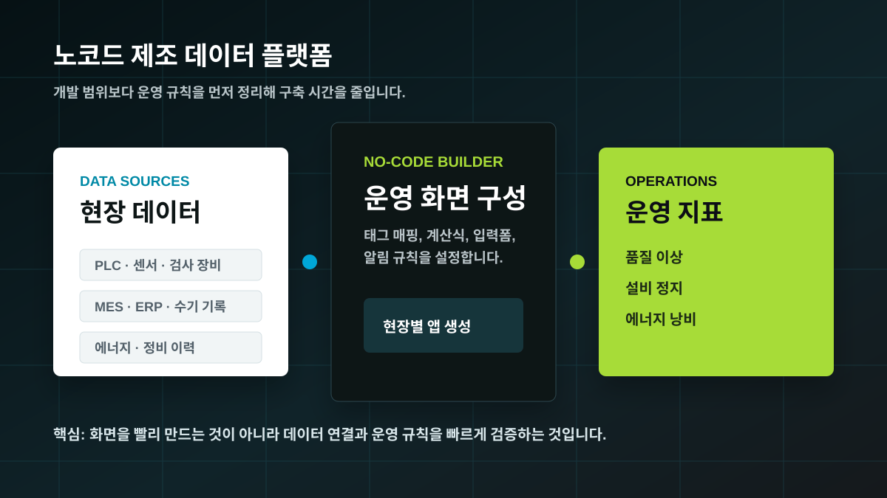
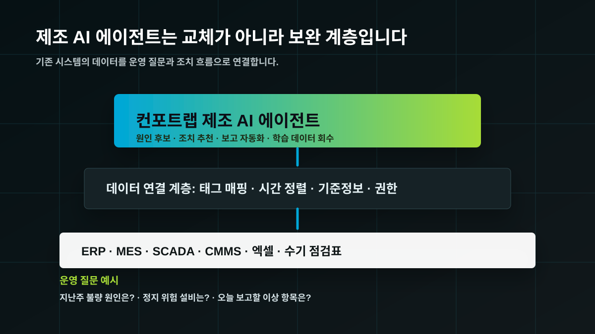
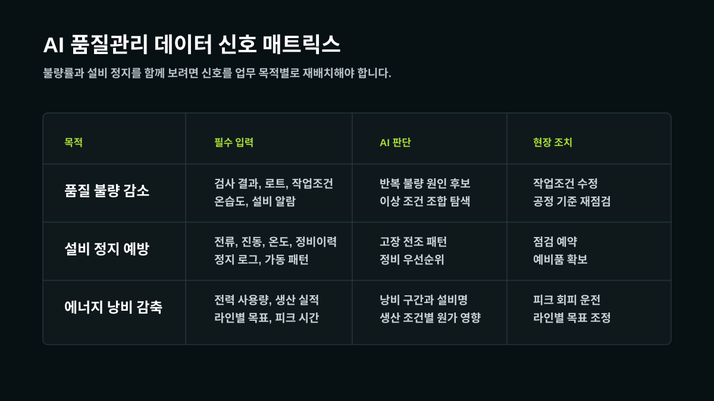
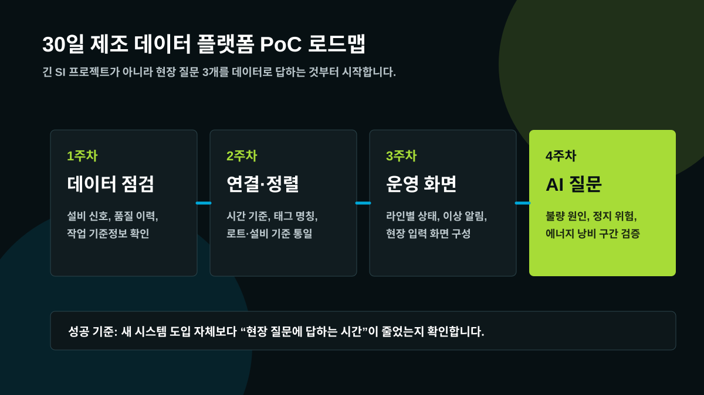

제조 데이터 플랫폼
컨포트랩 제조 데이터 플랫폼 가이드: 스마트공장 구축 전 체크리스트
설비 데이터 수집, 기준정보, MES 연동, 노코드 운영 화면, 제조 AI 질문을 한 번에 정리했습니다.
글 읽기컨포트랩 블로그
구매자가 실제로 검색하는 제조 데이터 플랫폼, AI 품질관리, 설비 예지보전, 제조 AI 에이전트, 스마트공장 구축 주제를 아티클 상세 페이지로 정리했습니다.

설비 데이터 수집, 기준정보, MES 연동, 노코드 운영 화면, 제조 AI 질문을 한 번에 정리했습니다.
글 읽기



